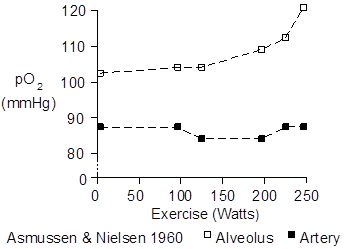
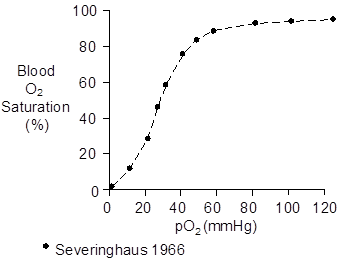
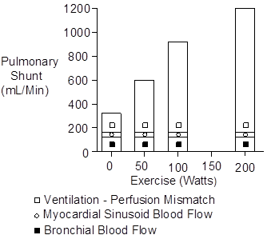
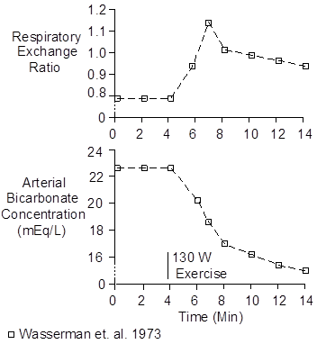

Exercise > Gas Exchange
Alveolar pO2 increases with increasing intensity of exercise, while arterial pO2 remains relatively unchanged. These relationships are shown below.

The alveolar-arterial pO2 gradient was 17 mmHg at rest, increasing to 35 mmHg at maximum exertion.
The pO2 gradient is caused by right-to-left shunt of deoxygenated blood (also called venous admixture).
Because the O2 dissociation curve (shown below) is so flat above 80 mmHg, a small amount of shunt flow and decrease in arterial O2 content will produce a substantial decrease in arterial pO2.

From the above data, the change in content caused by shunting is calculated to be 0.0036 mL/mL at rest. It doesn’t appear to change in exercise.
There are three sources of shunting. One is deoxygenated blood draining from the bronchial circulation into the pulmonary vein. The second is deoxygenated blood draining from the myocardium into the left atrium and left ventricle. The third is ventilation – perfusion mismatch in the lungs.
The Thebesius veins (named after the German anatomist, A.C. Thebesius, 1686 – 1732) drain primarily into the right atrium and ventricle and do not contribute to shunting (Hammond and Austen, 1967). But there are also myocardial sinusoids (Wearn et. al. 1933) draining blood, primarily from the septum, into the left heart.
Shunt flow was calculated from the data presented above and three assumptions: (1) bronchial blood flow is 140 mL/Min and venous O2 content is 0.15 mL/mL, (2) myocardial sinusoid blood flow is 11 mL/Min (Hammond and Austen 1967) and O2 content is 0.14 mL/mL, and (3) the remainder of the shunt is due to ventilation – perfusion mismatch. The results are shown below.

 Gas Exchange Ratio
Gas Exchange Ratio
The respiratory quotient (RQ) is the rate that carbon dioxide is produced by cells divided by the rate that oxygen is consumed by the cells.
The respiratory quotient is determined by the fuel being burned and is typically 0.8.
| Fuel | RQ |
| --------------------- | ------- |
| Carbohydrates | 1.00 |
| Protein | 0.80 |
| Fat | 0.70 |
The gas exchange ratio is the rate that carbon dioxide leaves the lungs divided by the rate that oxygen enters the lungs. At steady-state, the respiratory quotient and gas exchange ratio are equal.
If the amount of CO2 stored in the body is changing, the respiratory quotient and the gas exchange ratio will not be equal.

A notable example is the onset of strenuous exercise. Lactic acidosis decreases the body’s capacity to store CO2 as bicarbonate (see Bicarbonate) and more CO2 is exhaled than is produced. This increases the gas exchange ratio as (particularly arterial) bicarbonate concentration is falling. This is illustrated above.
References
Asmussen, E. and M. Nielsen. Alveolo-arterial gas exchange at rest and during work at different O2 tensions. Acta Physiol. Scand. 50:153-166, 1960.
Hammond, G.L. and W.G. Austen. Drainage patterns of coronary arterial flow as determined from the isolated heart. Amer. J. Physiol. 212:1435-1440, 1967.
Severinghaus, J.W. Blood gas calculator. J. Appl. Physiol. 21:1108-1116, 1966.
Wasserman, K., B.J. Whipp, S.N. Koyal and W.L. Beaver. Anaerobic threshold and respiratory gas exchange during exercise. J. Appl. Physiol. 35:2236-243, 1973.
Wearn, J.T., S.R. Mettier, T.G. Klumpp and L.J. Zschiesche. The nature of vascular communications between the coronary arteries and the chambers of the heart. Amer. Heart J. 9:143-164, 1933.